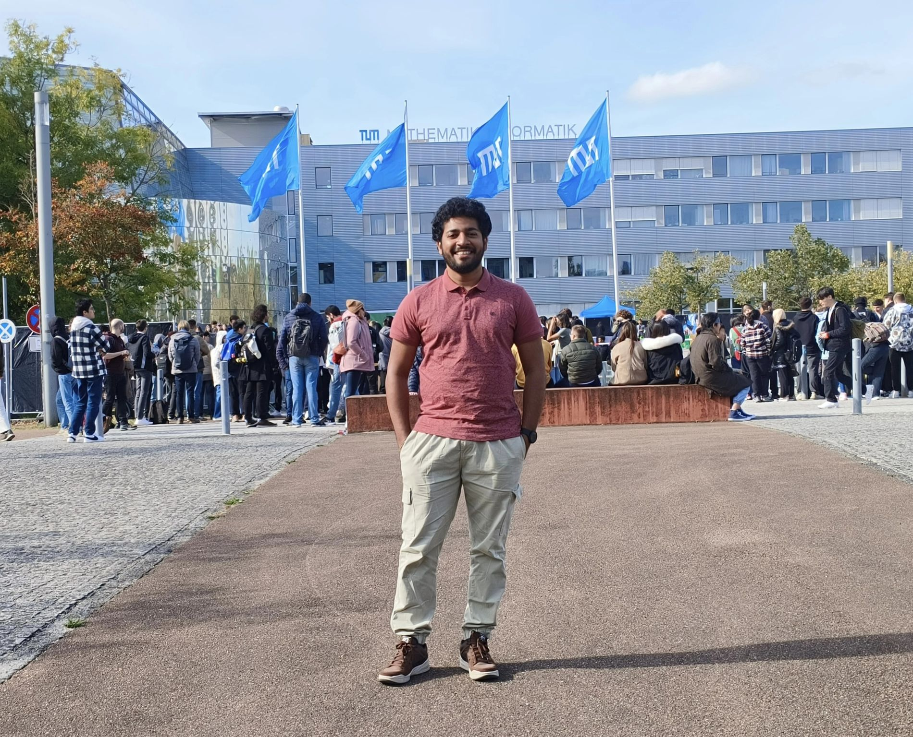

Born in Kerala, India. Currently pursuing Masters in Sustainable Resource Management at Technical University of Munich. 6+ years of sales and marketing expertise in the energy industry. Proficient at team management, negotiations, inventory control, supply chain management, procurement, and channel management.
An enthusiastic follower of advancements in sustainable development, renewable energy, and business case studies.

The No.1 technical univesrity in Germany and one of the top 50 universities in the world as per the QS ranking.

A Fortune 500 company and India's second-largest oil and gas marketing conglomerate.

Did my bachelors in Mechanical Engineering at GEC Thrissur. The experience was nothing short of magical.
I was one of the privileged students in India who had access to good education throughout my life, although the transition through different phases of education was never easy.
The longest period of patience I've ever had in my life, and the wait was worth it. It was never about thrill and chill, but rather a beautiful journey that we both had to inevitably go through and endure.
I've been a fan of the Germany international football team for a long time. I only started playing badminton after 2017. Even though I enjoy playing other sports, these are the ones I can't resist playing or watching wherever I go.